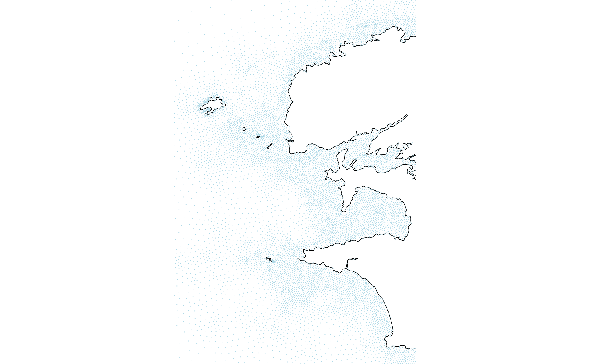

The goal of resourcecode is to provide an easy access to the Resourcecode hindcast database of sea-states. More information on the database can be found here. We will explain in this vignette the way to retrieve data from this data base and some the functionalities offered by this package.
Database configuration: nodes, bathymetry…
There are two grids in the ResourceCODE hindcast database: the full, dense, FIELD grid, which is the grid where the numerical WWIII model is run and where sea-state parameters and only 1D spectra are available. The second grid, SPEC, is coarser, but contains the full 2D spectral data at each node.
- FIELD grid
The variable rscd_field contains the coordinates of the
FIELD grid, alors with the depth of these points and d50,
the bottom sediment type.
str(rscd_field)
#> Classes 'data.table' and 'data.frame': 328030 obs. of 5 variables:
#> $ node : int 1 2 3 4 5 6 7 8 9 10 ...
#> $ longitude: num 6.92 6.91 6.92 6.93 6.95 ...
#> $ latitude : num 62.9 62.9 62.9 62.9 62.9 ...
#> $ depth : num 3 3 3 3 3 3 3 3 3 3 ...
#> $ d50 : num 0 1.32 1.32 1.32 1.32 ...
#> - attr(*, ".internal.selfref")=<externalptr>
head(rscd_field)
#> node longitude latitude depth d50
#> 1 1 6.922498 62.91467 3 0.000
#> 2 2 6.910178 62.91301 3 1.322
#> 3 3 6.920552 62.90438 3 1.322
#> 4 4 6.933673 62.89938 3 1.322
#> 5 5 6.945979 62.90012 3 1.322
#> 6 6 6.958059 62.89899 3 1.322At each location, a large number of sea-state parameters are
available, described in rscd_variables:
str(rscd_variables)
#> tibble [88 × 3] (S3: tbl_df/tbl/data.frame)
#> $ name : chr [1:88] "longitude" "latitude" "tri" "MAPSTA" ...
#> $ longname: chr [1:88] "longitude" "latitude" "tri" "status map" ...
#> $ unit : chr [1:88] "degree_east" "degree_north" "" "1" ...
head(rscd_variables)
#> # A tibble: 6 × 3
#> name longname unit
#> <chr> <chr> <chr>
#> 1 longitude longitude "degree_east"
#> 2 latitude latitude "degree_north"
#> 3 tri tri ""
#> 4 MAPSTA status map "1"
#> 5 dpt depth "m"
#> 6 ucur eastward current "m s-1"The available location can be plot on a map using the following code.
It can be notices here that the variables rscd_coastline
and rscd_islands contains the path of the coast line and
the islands, respectively.
lim_lon = c(-5.25, -4.25)
lim_lat = c(47.75, 48.75)
field_BZH = ggplot(rscd_field,aes(x=longitude,y=latitude))+
geom_point(shape='.',col='lightblue')+
geom_path(data=rscd_coastline,linewidth=.2)+
geom_path(data=rscd_islands,aes(group=.data$ID),linewidth=.2)+
coord_sf(xlim=lim_lon,ylim=lim_lat,expand=F,crs = sf::st_crs(4326))+
theme_void()
field_BZH
- SPEC grid
The spectral grid, or SPEC grid is coarser, with more than 24,000 nodes where the full 2D spectra are available. The grid can be add to the previous plot to see the diferences in the spatial coverage.
field_BZH + geom_point(data=rscd_spectral,col='orange',shape='.')
Helpers
We one is interested in some location, we also provide helpers to
find the closest point in each of the grid, via the
closest_point_FIELD() and closest_point_SPEC()
functions.